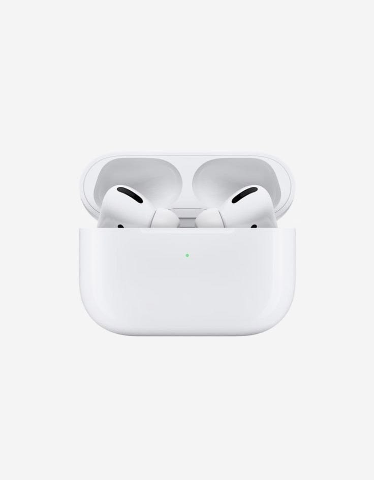

에어팟 프로 2세대
No.001● 보관중 (수령 가능)
설명
에어팟 프로 2세대 본체(화이트)입니다. 순헌관 302호에서 습득되었습니다. 뒷면에 살짝 긁힘 있습니다. 현재 학생회관 305호 학생지원센터에 보관 중이며, 본인 확인 후 수령하실 수 있습니다.
습득 정보
발견 장소순헌관 302호 강의실 4번째 줄 책상 아래
발견 일시2026년 10월 08일 16:30경
습득 상태외관 양호, 본체 뒷면 미세 흠집 있음
현재 보관처학생회관 305호 학생지원센터
※ 방문 시 실물 신분증(학생증 또는 주민등록증)을 반드시 지참해 주세요.